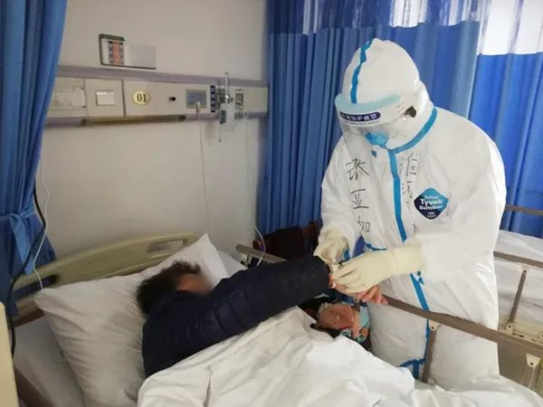
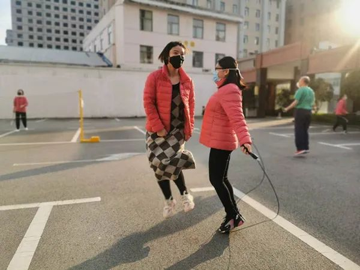
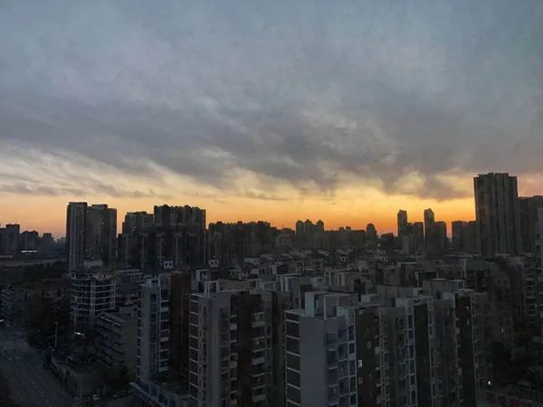

在人间丨我在武汉协和西院的30天
原文链接 备份链接 凤凰新闻客户端 凤凰网在人间工作室出品 我是北京日报摄影记者和冠欣，1月27日，我跟随援鄂北京医疗队来到了武汉，走上了抗击新冠肺炎的战场。昨天，2月25日，是我到武汉的第30天。 援鄂北京医疗队来到武汉后，在武汉协和 …
澎湃新闻记者 段彦超 实习生 宋文慧
张亚如还记得一个月前刚到武汉的时候，队员们在酒店里培训了两天，练习穿脱防护服。
虽然各家医院都带来了一些防护物资，但大家都舍不得把防护服浪费在练习上，一套防护服一副手套，二十多名医生轮着穿了脱、脱了穿……
最后，那套防护服破了，连手套也烂的不像样子。

张亚如在病房。本文图片 受访者提供
30岁的张亚如是河南首批支援湖北医疗队成员、河南大学淮河医院消化内科护士，从1月27日至3月4日，她已在湖北武汉一线抗疫37天。回忆自己穿上防护服将要走进隔离区病房的那一刻，从紧张到能听清自己的心跳，慌到手抖，到逐渐坚定勇敢；从常听闻重症患者“这个班还在下个班就没了”，到近段自己所在病区都无患者死亡；从病区最初满床，到现在空床率近一半——情况在明显好转。
张亚如告诉澎湃新闻（www.thepaper.cn），每天最开心的事，是下班时交接本上没因死亡消失的患者。她坚信，她一定会带着家人的牵挂，凯旋而归。到时候，她要好好安慰紧张的母亲，抱抱可爱的儿子。
第一次进病房，能听清自己的心跳
最近，从武汉市第四医院回到酒店，除开会讨论患者护理方案，有时，张亚如会和同事在酒店广场跳跳绳、打打羽毛球。
跳绳和羽毛球都是河南大学淮河医院寄来的，“单位在后方太给力了。”张亚如告诉澎湃新闻，小到生活用品袜子、内衣，大到N95口罩、防护服这些重要物资，单位都想尽办法筹集送到武汉。在初期防护物资极度匮乏时，一度有同行表示羡慕。

张亚如（左）下班后和同事锻炼
跳绳、打羽毛球，是让医护人员增强锻炼，放松心情。医疗队在群里公布有心理医生的电话，不过张亚如没打过。她说，有些“战友”失眠比较严重，为此，医疗队配有帮助睡眠的药物。
自认神经比较“大条”，张亚如觉得自己目前心理状况还不错。
张亚如是土生土长的河南开封人，父母是做生意的。她在河南商丘读大学时，每个周末都要回家。从读书、工作到结婚生子，她觉得自己被各种疼爱，被保护得现在做了妈妈还像个小女孩。
正月初一（1月25日），单位通知报名时，有呼吸科工作经验的张亚如毫不犹豫报了名，她按要求给领导发去丈夫同意的微信聊天截图，丝毫没感觉害怕，反而有些激动。
就在报名前，张亚如曾梦到自己到武汉支援了。后来，当她真正穿着包得严严实实的防护服，进到病房，突然强烈地感觉，这一幕和梦中的场景一模一样。这件无法解释的事，她没敢和别人说。
报名那天，张亚如只告诉母亲单位通知报名。次日在高铁上，她接到母亲电话，母亲一哭，她就难受了，只能安慰“没事没事”。
医疗队成员来自河南多家医院，正式入驻武汉市第四医院前，在酒店培训了两天。虽然各院都带有一些防护物资，但大家舍不得浪费。河南大学淮海医院26名医护人员，轮流用一套防护服练习。
“最后，那套防护服都破了，手套也烂得不像样。”张亚如说。
主要是练习脱防护服，因为从病房出来，防护服是被污染的，所以要特别小心。“每脱一次，就多一次感染风险。”张亚如算脱得比较快的，也要30多分钟。即使现在比较熟练，也要10多分钟。
“进驻医院前开会时，领队表情比较凝重。他想着我们都年轻，一定要把我们带回去。我觉得好像真的直面生死了。”张亚如说。
疫情发生后，武汉市第四医院的住院楼整幢被改为新冠肺炎病区。河南大学淮海医院的26名医护人员，最初负责十楼和十一楼两个病区，后增加十二楼病区，每个病区37名左右患者。
当时，武汉已经有不少医护人员感染。进驻后，张亚如第一次穿好防护服，望着镜子中的自己，感觉有些恐怖。经过层层程序，到最后一道门，按病房按钮那一刻，她能清楚听到自己的心跳。
“我做着深呼吸，也无法控制手抖。”她说。

张亚如生活照
患者夸医护人员是“好孩子、英雄”
有时，张亚如感觉，身体上的疲惫已达极限。
每个班4个小时，为避免上厕所，上班前两个小时不能吃喝。每次上完班，除膝盖以下，衣服常湿漉漉的。最难受的是防护服里出现状况，比如口罩耳带勒住耳朵疼了、身上痒了，也无法处理，特别痛苦。医护人员还要穿纸尿裤，以防尴尬时刻。
起初，近40名患者不能自理的差不多十个，许多患者需要高流量吸氧。患者四肢健全，就是下不了床也没法动，能清楚听到他们的闷喘声。最可怕的是死亡率高、还特别快。“这个班还跟他说话，下个班再去，人就没有了。”
“刚开始心理压力确实比较大，每次回酒店，都会洗很久。”张亚如说，可能因为住院晚，患者病情都很重，打针喂饭喂水时，随时都会咳嗽。还要帮有些患者换纸尿裤、收拾卫生。在帮一位女患者倒小便时，不小心尿液混着经血溅到她的鞋套上。
待了几天后，张亚如觉得，“没那么害怕了”。
因为她深刻感受到患者想活着的欲望：患者们特别不爱说话，而且心理压力很大。量体温，如果发烧了，立马会急，说“怎么会发烧啊，我不应该发烧，我不能发烧啊”。很多患者觉得自己不行了。
在病房，张亚如和同事会想办法鼓励患者。她们会告诉患者每种药的作用，想法劝患者多吃饭，和患者多聊天拉近关系。
有一位老太太，正和孙女视频，张亚如看到，下意识和小女孩打招呼。小女孩问她是阿姨还是叔叔，她说是阿姨。小女孩的妈妈让女孩在视频里给张亚如鞠躬。“说感谢我照顾她奶奶，我当时特别感动。挂完电话，老太太问我，自己还能不能见到孙女，我鼓励她说我也有孩子，我们都能见到他们。”张亚如说。
每当患者死亡，医护人员会帮助清理物品，手机等有价值或意义的，会消毒后用塑料袋装起来，写上名字，通知家属。
让人心酸的故事很多。有位老太太，在治疗过程中，身为博士导师的女儿已在另一个医院去世。还有一天晚上，一位老先生送40多岁的癫痫儿子住院，儿子心智像个小孩一样，老先生不放心，也想住在这里，但他的病情只符合去方舱医院。老先生的老伴、父亲，都因新冠肺炎去世。走时，他交代一定要给儿子按时吃药。我们安慰他一定要挺住，因为他以后还要照顾儿子。
“真的太伤感了，同事们都流泪了。”张亚如说。
在病区，也有很多温暖时刻。26床老爷爷，每次张亚如去给他输液，都会竖起大拇指，夸她们是好孩子，也是英雄。张亚如也会鼓励老爷爷，“有我们在，你也一定会好起来的！”
有一天，她感觉最暖心的事，是这位老爷爷多喝了一碗粥，“他不知道，他多问我要一碗粥的时候，我心里有多激动。”

张亚如拍下的武汉2月17日的黄昏
“来，肯定就是吃苦的”
张亚如每天最开心的事，是下班时交接本上没因死亡消失的患者。
她告诉澎湃新闻，在方舱医院启用十天左右，情况越来越好。
目前，张亚如所在的病区，只有20名患者，空床率近百分之五十。已经连续多天没有休息的医护人员，每周可以轮休一天。最让人高兴的，是治愈患者越来越多，死亡患者越来越少。她所在的病区，已经两个星期没有患者死亡。
2月27日，张亚如所在病区有两名患者出院。一位是八十岁高龄的老奶奶，一位是大学教师。她们感谢医护人员救了她们的命。帮她们提行李，送她们出院时，没有拥抱、没有握手送别，看着两人笑眯眯的眼神，张亚如觉得，一切付出都是值得的。
她告诉澎湃新闻，因为到的早，她们住宿的酒店条件不错，虽然饮食上有一些不习惯，但大家对这个没什么要求。“来，肯定就是吃苦的，要想吃香的喝辣的就不可能。”她笑着说。
只是目前N95口罩比较紧张，她手里只有5只了。上午8点到12点的班与患者接触最频繁，碰到这个班她才舍得用。
2003年非典时，张亚如读初中，最大的印象是不让上课了。谁也不会想到，她现在会作为护士，投入这样一场“战疫”。

张亚如的日记
在日记里，张亚如写道，儿子有家人照顾，她很放心，“因为我这个笨拙的妈妈，也只会带他玩玩游戏，做的永远都是黑暗料理。不过，妈妈的小王子，现在，你的妈妈在做一件特别厉害的事情”。
每天，母亲至少会跟张亚如视频一次。如果不视频，母亲会睡不着。平时就和母亲无话不谈的她，每次最少聊40分钟。
在电话里，乖巧的儿子会问她为什么还不回去。她总是告诉儿子，等妈妈击败病毒。儿子还不知道这关乎生死，则会开心鼓掌说，“妈妈加油”。她还不能让儿子觉得害怕，会给儿子发自己的照片，跟儿子说现在还不能出门，因为妈妈还没有胜利。
再过8天，就是儿子四岁生日，张亚如赶不回去了。她说，等抗疫胜利回去，要给母亲补一个团圆年，给儿子补一个生日。她最想做的，是好好安慰下紧张的母亲、抱抱自己的小王子，再吃点好的。
前些天，张亚如曾拍下武汉的夕阳。一众高楼在暮色中，灰暗而阴沉，而在天际，是一抹美丽、亮眼的晚霞。
本期编辑 周玉华
推荐阅读


原文链接 备份链接 凤凰新闻客户端 凤凰网在人间工作室出品 我是北京日报摄影记者和冠欣，1月27日，我跟随援鄂北京医疗队来到了武汉，走上了抗击新冠肺炎的战场。昨天，2月25日，是我到武汉的第30天。 援鄂北京医疗队来到武汉后，在武汉协和 …
原文链接 备份链接 *************▲*************2月8日晚，武汉雷神山医院收治第一批转运来的新冠肺炎患者。（新华社/图 ） 全文共*2708*字，阅读大约需要7分钟。 所有设备调试完毕后，雷神山医院感染一科十 …
原文链接 备份链接 编者按： 本文作者刘韬滔为北京医院外科ICU主治医师，进入援鄂国家医疗队名单后，二月七日从北京去往武汉，进行医疗救助。 二月八日晚上九点坐大巴车从汉口驻地出发。半小时后进入蔡甸区，车在一路口红灯前停下。我转头望向窗外， …
原文链接 备份链接 *************▲*************2月4日，医护人员将患者转运至武汉火神山医院病房。 （新华社记者 肖艺九/图） 全文共7126字，阅读大约需要14分钟。 火神山医院从开工到交付使用，只用了大 …
原文链接 备份链接 文：蔡星卓 “每个人都在拼尽全力呼吸。” 刚开始是发热和咳嗽，接着是明确的呼吸困难，用赵一波的话说，病毒让肺像肿了一样，进而使肺失去了呼吸的功能。有的病人带着面罩，有的病人带着氧气管，有的病人插着 …